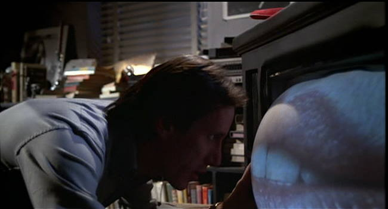
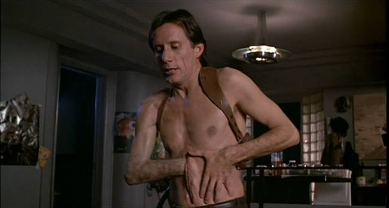
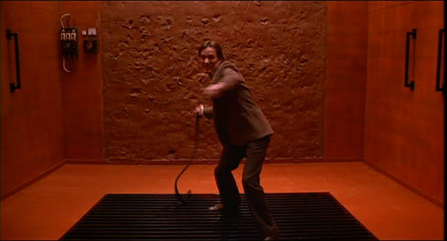
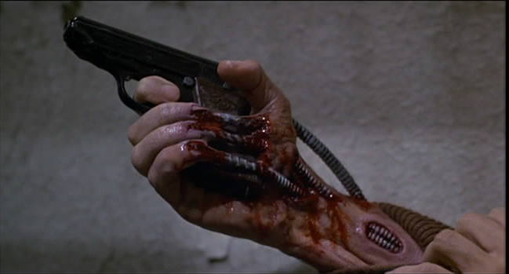
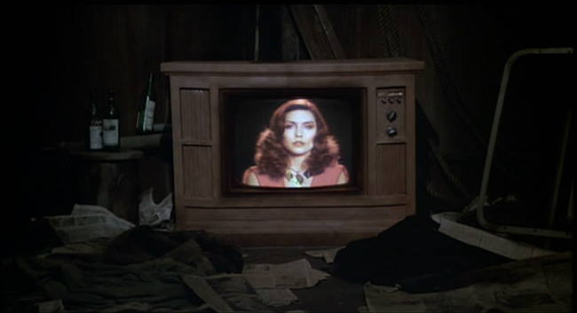

Movie review by : SFAM
Year : 1983
Directed by : David Cronenberg
Written by : David Cronenberg
Degree of Cyberpunk visuals : Medium
Correlation to Cyberpunk themes : High
Rating : 7/10
Key cast members :

Overview: Videodrome, another interesting flick from mind-fuck horror master, David Cronenberg, provides us an interesting commentary on the effects of total immersion into a mass-media culture. Filmed for a paltry 6 million, this movie generated significant buzz upon release as one of the weirder movies ever made. Unfortunately, its FX don't age well, and maybe I've seen just a few too many weird movies to consider Videodrome all that strange now. But if you're in the mood for a strange cyberpunk horror, this is one to consider.

The Story: Max Renn (played wonderfully by James Woods), a sleazy two-bit cable TV executive is always on the lookout for shows that pass the bounds of human decency. One day while scanning the satellite feed, his engineer stumbles upon an S&M, broadcast from a strange production company called Videodrome. Not only are the subjects beaten, they may even be involved in creating a snuff film. Curiosity gets the better of Max, and he becomes obsessed with finding the broadcast.

Along with his pain and pleasure girlfriend (played by Blondie's Deborah Harry), Max finds the broadcast, and is then shocked to learn that his girlfriend has left to become a star on Videodrome. In pursuing her, and in wanting to experience Videodrome for himself, Max becomes captivated by the Videodrome signal. The wall between reality and fantasy dissolves and Max becomes a pawn in a plot to broadcast Videodrome's subliminally controlling signal to millions.

Cyberpunk Musings: If we strip out the bizarre and magical horror stuff, Videodrome's message is that total immersion into mass media dehumanizes us. It excites us into a state of hyper-violence and deviant sexual desires. Videodrome's desire to create the "new flesh", in movie terms is the merging of human consciousness with mass media. In a more post-human sense, Cronenberg seems to be saying that humanity itself is becoming lost as society slips further and further into this new mass-media culture. By feeding our deviant unconscious desires that have been surfaced by addiction to mass media, in effect, our humanity and individualism is lost.

The Bottom Line: Even though the effects seem dated, Videodrome is still a pretty weird head trip. The characters are by no means deep, but the acting is good enough to keep you entertained in places where the story falters. I will say the as a whole, the cinematography wasn't the greatest ? there were significant lighting issues, and very little imagination in camera angle placements. But whether you watch this movie purely for the horror or the philosophy, the ideas are interesting enough to keep you entertained even with the FX start to falter. I'm torn between giving this film a 7 star rating or an 8 star rating ? for now I'll give it 7 stars until someone provides a good enough argument to merit changing it.